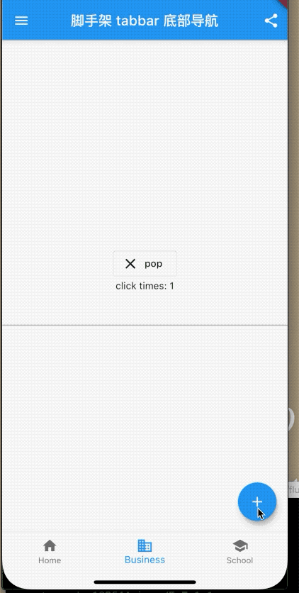
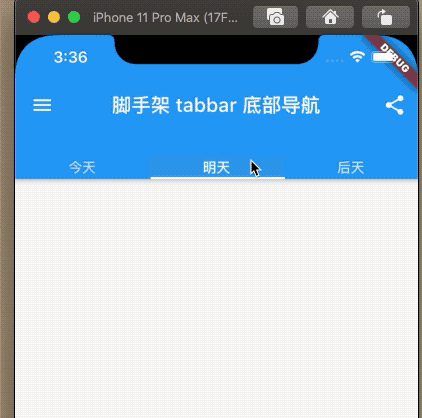
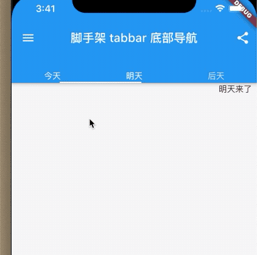
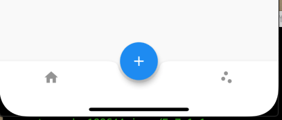

5.6 脚手架
Scaffold就是一个大容器，里边包含了很多的其他容器，比如抽屉、悬浮按钮、bottombar、等等。
我们先看一下属性
Scaffold({
Key key,
this.appBar,
this.body,
this.floatingActionButton,
this.floatingActionButtonLocation,
this.floatingActionButtonAnimator,
this.persistentFooterButtons,
this.drawer,
this.endDrawer,
this.bottomNavigationBar,
this.bottomSheet,
this.backgroundColor,
this.resizeToAvoidBottomPadding,
this.resizeToAvoidBottomInset,
this.primary = true,
this.drawerDragStartBehavior = DragStartBehavior.start,
this.extendBody = false,
this.extendBodyBehindAppBar = false,
this.drawerScrimColor,
this.drawerEdgeDragWidth,
this.drawerEnableOpenDragGesture = true,
this.endDrawerEnableOpenDragGesture = true,
})
appBar默认导航栏body页面的主体floatingActionButton、floatingActionButtonLocation、floatingActionButtonAnimator悬浮按钮和属性drawer抽屉endDrawer右侧抽屉bottomNavigationBar底部导航bottomSheet底部工具栏 位于导航上面backgroundColor背景颜色resizeToAvoidBottomPadding、resizeToAvoidBottomInset当Textfield编辑状态是否谈起页面。drawerEnableOpenDragGesture手势拖动打开抽屉
例子
class _ScaffoldRouteState extends State<BaseBars> {
int _selectedIndex = 1;
@override
Widget build(BuildContext context) {
return Scaffold(
appBar: AppBar(
//导航栏
title: Text("脚手架 tabbar 底部导航"),
actions: <Widget>[
//导航栏右侧菜单
IconButton(icon: Icon(Icons.share), onPressed: () {}),
],
),
drawer: new Drawer(
child: _drawer(),
), //抽屉
bottomNavigationBar: _bottomNavigationBar(),
// bottomSheet: _bottomNavigationBar(),
floatingActionButton: FloatingActionButton(
//悬浮按钮
child: Icon(Icons.add),
onPressed: _onAdd),
resizeToAvoidBottomInset: true, //谈起键盘则页面上移
primary: true, //是否展示在顶部东航栏高度，true占用高度，否则只是在状态栏
body: Center(
child: Column(
mainAxisAlignment: MainAxisAlignment.center,
children: <Widget>[_bd2(), Text('click times: $_count'), TextField()],
),
),
// extendBody: true,
// extendBodyBehindAppBar: true,
drawerEdgeDragWidth: 20, //手势多动偏移量 默认20px
drawerDragStartBehavior: DragStartBehavior.start,
drawerEnableOpenDragGesture: true, //手势拖动打开抽屉
);
}
BottomNavigationBar _bottomNavigationBar() {
return BottomNavigationBar(
// 底部导航
items: <BottomNavigationBarItem>[
BottomNavigationBarItem(icon: Icon(Icons.home), title: Text('Home')),
BottomNavigationBarItem(
icon: Icon(Icons.business), title: Text('Business')),
BottomNavigationBarItem(
icon: Icon(Icons.school), title: Text('School')),
],
currentIndex: _selectedIndex,
fixedColor: Colors.blue,
onTap: _onItemTapped,
);
}
int _count = 0;
void _onItemTapped(int index) {
setState(() {
_selectedIndex = index;
});
}
void _onAdd() {
setState(() {
_count++;
});
}
Widget _bd2() {
return OutlineButton.icon(
onPressed: () {
Navigator.pop(context);
},
icon: Icon(
Icons.close,
size: 25,
),
label: Text('pop '));
}
Widget _drawer() {
return Column(
mainAxisAlignment: MainAxisAlignment.center,
children: <Widget>[
Text('点击我返回，左滑返回，点击遮罩返回'),
_bd2(),
],
);
}
}
效果：

AppBar
AppBar是一个Material风格的导航栏，通过它可以设置导航栏标题、导航栏菜单、导航栏底部的Tab标题等,我们看下属性
AppBar({
...
this.leading,//导航左侧部件
this.automaticallyImplyLeading = true,//是否默认自动实现leading 按钮
this.title,//标题部件
this.actions,//导航左侧菜单
this.bottom,//底部导航菜单 一般用于Tab数组
this.toolbarOpacity = 1.0,
this.bottomOpacity = 1.0,
...
})
自定义一个leading，打开抽屉：
Scaffold(
key: _globalKey,
appBar: AppBar(
//导航栏
title: Text("脚手架 tabbar 底部导航"),
actions: <Widget>[
//导航栏右侧菜单
IconButton(icon: Icon(Icons.share), onPressed: () {}),
],
leading: IconButton(
onPressed: () {
_globalKey.currentState.openDrawer();
},
icon: Icon(Icons.open_with),
),
)
}
看效果了

Tabbar
Material组件库中提供了一个TabBar组件，它可以快速生成Tab菜单.我们看一个例子;
void initState() {
_tabController = TabController(vsync: this, length: 3);
super.initState();
}
@override
Widget build(BuildContext context) {
return Scaffold(
key: _globalKey,
appBar: AppBar(
//导航栏
title: Text("脚手架 tabbar 底部导航"),
actions: <Widget>[
//导航栏右侧菜单
IconButton(icon: Icon(Icons.share), onPressed: () {}),
],
bottom: TabBar(
controller: _tabController,
tabs: <Widget>[Text('今天'), Text('明天'), Text('后天')],
),
))
}

使用TabBarView添加body 实现联动效果：
...
body: TabBarView(
controller: _tabController,
children: <Widget>[
Container(
alignment: Alignment.topCenter,
child: Text('今天来了'),
),
Container(
alignment: Alignment.topCenter,
child: Text('明天来了'),
),
Container(
alignment: Alignment.topCenter,
child: Text('后天来了'),
),
],
)
...
效果：

FloatingActionButton
FloatingActionButton在底部，也可以嵌入到底部导航栏上。
bottomNavigationBar: BottomAppBar(
color: Colors.white,
shape: CircularNotchedRectangle(), // 底部导航栏打一个圆形的洞
child: Row(
children: [
IconButton(icon: Icon(Icons.home)),
SizedBox(), //中间位置空出
IconButton(icon: Icon(Icons.scatter_plot)),
],
mainAxisAlignment: MainAxisAlignment.spaceAround, //均分底部导航栏横向空间
),
),
floatingActionButtonLocation: FloatingActionButtonLocation.centerDocked,
floatingActionButton: FloatingActionButton(
//悬浮按钮
child: Icon(Icons.add),
onPressed: _onAdd)

或者嵌入右侧
...
[
IconButton(icon: Icon(Icons.home)),
IconButton(icon: Icon(Icons.scatter_plot)),
SizedBox(),//右侧流出空隙
]
...
floatingActionButtonLocation: FloatingActionButtonLocation.endDocked,

或者在顶部
...
[
IconButton(icon: Icon(Icons.home)),
IconButton(icon: Icon(Icons.scatter_plot)),
]
...
floatingActionButtonLocation: FloatingActionButtonLocation.miniStartTop,

CircularNotchedRectangle在底部打了一个洞，继承了NotchedShape，当然我们也可以自己定义一个形状。形状的位置是由floatingActionButtonLocation来确定的，
感兴趣的同学可以自己实现一个五角星的形状.